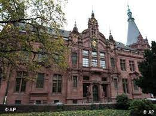
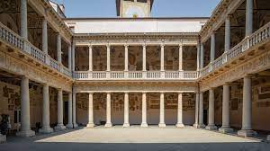
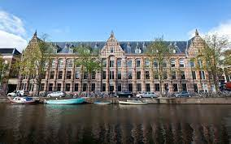
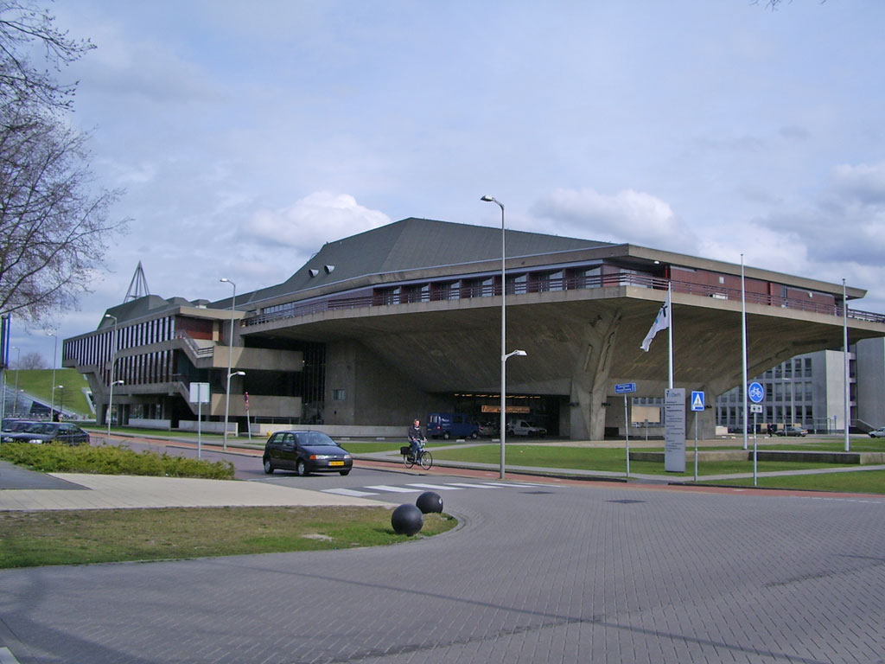

Universidades de Francia

Universidad de París-Saclay:
Es una universidad pública ubicada en el área metropolitana de París. Se formó en 2019 a partir de la fusión de varias instituciones académicas prominentes. La Universidad de París-Saclay se destaca en áreas como ciencia, tecnología, ingeniería, matemáticas y ciencias sociales.
Carreras disponibles
- Bioquímica
- Matemáticas
- Física
- Filología Francesa
Universidad de Estrasburgo:
Es una universidad pública situada en la ciudad de Estrasburgo, en el noreste de Francia. Fue fundada en 1538 y es una de las universidades más antiguas de Francia. La Universidad de Estrasburgo ofrece una amplia gama de programas académicos en diversas disciplinas, como humanidades, ciencias sociales, ciencias naturales, medicina y derecho.
Carreras disponibles
- Bioquímica
- Matemáticas
- Derecho
- Empresariales
Universidades de Alemania

Universidad Técnica de Múnich:
Es una de las universidades técnicas más destacadas de Alemania y se encuentra entre las mejores instituciones de ingeniería y ciencias naturales del mundo. La Universidad Técnica de Múnich es conocida por su excelencia en investigación y ofrece una amplia gama de programas en campos como ingeniería, ciencias de la computación, medicina, ciencias naturales, arquitectura y administración de empresas. Además, cuenta con varios campus en diferentes ubicaciones, incluyendo Múnich, Garching y Freising-Weihenstephan.
Carreras disponibles
- Electomecánica
- Matemáticas
- Informática
- Filología Alemana
Universidad de Heidelberg:
Es una de las universidades más antiguas de Alemania y se encuentra entre las universidades de investigación más prestigiosas de Europa. La Universidad de Heidelberg es conocida por su excelencia en ciencias naturales, ciencias sociales y humanidades. Ofrece una amplia variedad de programas académicos en áreas como medicina, derecho, ciencias naturales, humanidades, ciencias sociales, teología y ciencias económicas. La universidad se encuentra en la ciudad de Heidelberg, que es famosa por su ambiente universitario histórico y encanto pintoresco.
Carreras disponibles
- Bioquímica
- Bellas Artes
- Física
- Filología Francesa
Universidades de Italia

Universidad de Bolonia :

Fundada en 1088, la Universidad de Bolonia es considerada la universidad más antigua del mundo occidental en funcionamiento continuo. Es una institución líder en Italia y Europa en términos de calidad académica y reconocimiento internacional. La universidad ofrece una amplia gama de programas de grado y posgrado en diversas disciplinas, incluyendo artes, ciencias, ingeniería, medicina, derecho y ciencias sociales. La Universidad de Bolonia es conocida por su enfoque en la investigación, la innovación y el fomento del diálogo intercultural.
Carreras disponibles
- Bellas Artes
- Matemáticas
- Filosofía
- Filología Italiana
Universidad de Padua:
Fundada en 1222, la Universidad de Padua es una de las universidades más antiguas de Italia y del mundo. Es reconocida por su excelencia académica y ha sido el hogar de importantes figuras históricas, como Galileo Galilei y Nicolás Copérnico. La universidad ofrece una amplia variedad de programas en áreas como ciencias naturales, ingeniería, humanidades, ciencias sociales, medicina y derecho. La Universidad de Padua se destaca por su enfoque interdisciplinario, la calidad de su investigación y su contribución al avance del conocimiento en diversos campos.
Carreras disponibles
- Medicina
- Matemáticas
- Física
- Filología Italiana
Universidades de Holanda

Universidad de Ámsterdam:
La Universidad de Ámsterdam es una universidad pública ubicada en Ámsterdam, Países Bajos. Fundada en 1632, es una de las universidades más antiguas de los Países Bajos y se considera una de las mejores instituciones académicas del país. La universidad ofrece una amplia gama de programas de licenciatura, maestría y doctorado en diversos campos, incluyendo ciencias sociales, humanidades, ciencias naturales, derecho, economía y negocios. La Universidad de Ámsterdam se destaca por su enfoque en la investigación de vanguardia y la promoción del pensamiento crítico.
Carreras disponibles
- Informática
- Matemáticas
- Bellas Artes
- Filología Hollandesa
Universidad Tecnológica de Delft:
La Universidad Tecnológica de Delft es una institución de renombre mundial especializada en ingeniería, tecnología y ciencias aplicadas. Fundada en 1842, está ubicada en la ciudad de Delft, Países Bajos. La universidad es conocida por su excelencia académica y su enfoque en la investigación de vanguardia. Ofrece programas de licenciatura, maestría y doctorado en áreas como ingeniería civil, ingeniería eléctrica, ingeniería mecánica, arquitectura, ciencias de la computación y muchos otros campos relacionados. La Universidad Tecnológica de Delft se destaca por su enfoque en la innovación y la colaboración con la industria.
Carreras disponibles
- Bioquímica
- Medicina
- Física
- Filología Hollandesa